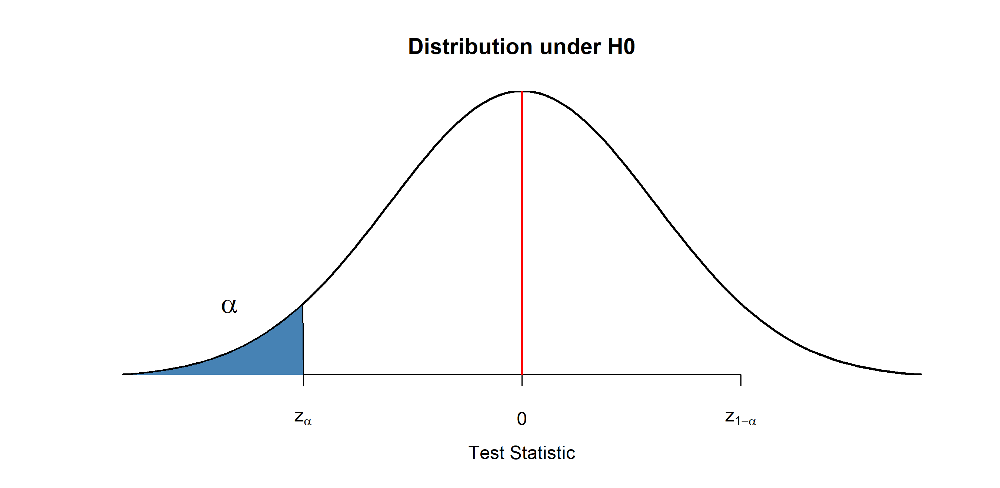
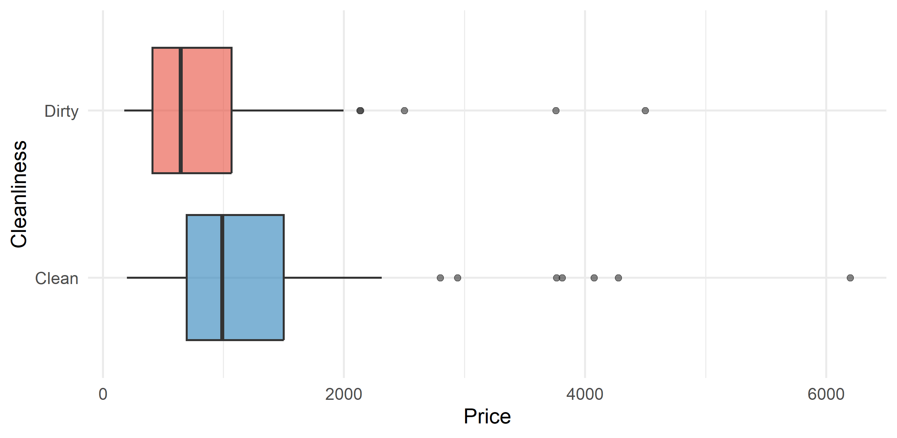
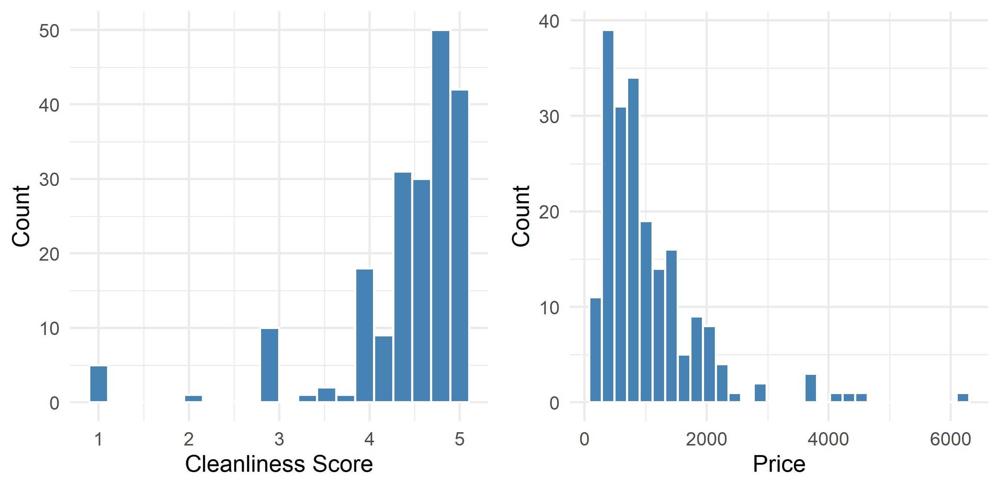
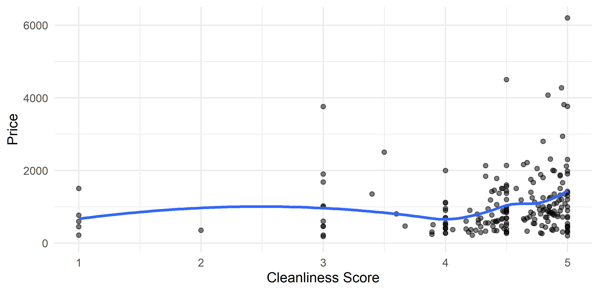

Week 7 — Hypothesis testing II & A/B testing
Business Forecasting
Where we are
Describing data → Reasoning under uncertainty → Regression → Time series forecasting
Last week of inference. Last week we tested a claim about one group. This week we compare two groups — and design the experiment that makes the comparison fair.
- This week (Testing II): two-sample & paired tests, correlation, and A/B testing — the causal-inference tool behind modern business experiments.
Fast & hands-on: every test you run in R (t.test, prop.test, cor.test) — the exercises appear as slides in this deck and the code runs right here in the browser.
🔁 Before we start — two minutes on last week
Sample_list holds the 200 sampled Mexico City listings, with price the nightly price in pesos. A pricing report claims the true mean nightly price is 1000.
- Compute the mean and the standard deviation of
Sample_list$price, then the standard error of the mean (the sample size is 200). - Build the one-sample test statistic for \(H_0: \mu = 1000\).
- Turn it into a two-sided p-value with
pt()at 199 degrees of freedom.
The statistic is (xbar - 1000) / se. pt(q, df = 199) gives the probability below q, so a two-sided p-value is 2 * (1 - pt(abs(t), df = 199)).
The sample mean sits less than one standard error above the claim, and a gap that size or bigger turns up 35% of the time even when the claim is true — so these data do not reject 1000. That was one sample measured against a fixed number you were handed. Today the number on the other side is estimated too: both means come with their own noise, and the statistic has to carry the uncertainty of both.
Hypothesis Testing: Two Samples
Two samples and the difference in means
Two iid samples, independent of each other, from two populations \(X_1,..,X_n\) and \(Y_1,..,Y_m\).
General idea: test the difference between population means.
- Ex: \(H_0: \mu_X-\mu_Y=100\) vs \(H_A: \mu_X-\mu_Y \neq 100\)
- Ex: \(H_0: \mu_X-\mu_Y=0\) vs \(H_A: \mu_X-\mu_Y>0\)
- Test for no difference: \(H_0: \mu_X-\mu_Y=0\) vs \(H_A: \mu_X-\mu_Y \neq 0\)
- Test statistic: normalized difference in sample means
\[\small \text{test stat}=\frac{\cssId{mt-diff}{\bar{X}-\bar{Y}}-\overbrace{\cssId{mt-delta0}{(\mu_{X,0}-\mu_{Y,0})}}^{\Delta_0}}{\cssId{mt-se}{SE}}=\frac{\bar{X}-\bar{Y}-\Delta_0}{SE}\]
- diff: The gap you actually observed between the two sample means. It is one number from one experiment, and it would come out differently on a rerun.
- delta0: The difference the null claims — usually 0, meaning “the two populations are the same”. It is the claim on trial, not the truth.
- se: The standard error of the difference: how much that gap wanders from experiment to experiment by pure luck. It is the yardstick the gap is measured against.
Variance in two samples
- SE depends on the estimate of the standard deviation:
- If standard deviation known: \(\small SE=\sqrt{\frac{\sigma_X^2}{n}+\frac{\sigma_Y^2}{m}}\)
- Why? Because \(\small Var(\bar{X}-\bar{Y})=Var(\bar{X})+Var(\bar{Y})=\frac{\sigma_X^2}{n}+\frac{\sigma_Y^2}{m}\)
- If standard deviation not known: \(\small SE=\sqrt{\frac{s_X^2}{n}+\frac{s_Y^2}{m}}\)
- Rejection region: depends on the distribution
- Large sample or known variance from normal: \(\small Z_{test} \sim N(0,1)\)
- Small sample with normal data: \(\small T_{test} \sim t(v)\) — critical values from Student’s t, \(v\) df
Side note — degrees of freedom
Degrees of freedom for a difference in means. Two ways to do it:
- Proper, complex (and annoying):
\[\small \cssId{mt-welchv}{v}=\frac{\left(\cssId{mt-varsum}{\frac{s_X^2}{n}+\frac{s_Y^2}{m}}\right)^2}{\cssId{mt-welchden}{\frac{(s_X^2/n)^2}{n-1}+\frac{(s_Y^2/m)^2}{m-1}}}\]
Round down to the nearest integer.
- Simple, approximate shortcut:
\[v=\cssId{mt-vmin}{min(n-1,m-1)}\]
- welchv: The Welch degrees of freedom: how much t-distribution tail you are entitled to when the two groups have different variances and different sizes. It is not a count, so it need not be a whole number.
- varsum: The squared standard error of the difference — the very same two pieces that sit in the denominator of the test statistic.
- welchden: Each group also contributes uncertainty about its own variance. The smaller, noisier group dominates this sum, and that is what drags the degrees of freedom down.
- vmin: The safe shortcut: pretend you have only as much information as the smaller group. It understates the real v, so the cut-off sits a little too far out and the test errs on the cautious side.
Difference in means — two-sided test
Hypothesis: \(H_0: \mu_X-\mu_Y=\Delta_0\) and \(H_A: \mu_X-\mu_Y \neq \Delta_0\)
Rejection Region: for a test of significance level \(\alpha\), reject
- If large sample or known variance from normal \[\small \cssId{mt-tstat}{\frac{\bar{X}-\bar{Y}-\Delta_0}{SE}}<\cssId{mt-zlo}{z_\frac{\alpha}{2}} \qquad or \qquad \frac{\bar{X}-\bar{Y}-\Delta_0}{SE}>\cssId{mt-zhi}{z_{1-\frac{\alpha}{2}}}\]
- If small sample from normal \[\small \frac{\bar{X}-\bar{Y}-\Delta_0}{SE}<t_{\cssId{mt-vdf}{v},\frac{\alpha}{2}} \qquad or \qquad \frac{\bar{X}-\bar{Y}-\Delta_0}{SE}>\cssId{mt-thi}{t_{v,1-\frac{\alpha}{2}}}\]
Where \(z_{1-\frac{\alpha}{2}}\) and \(t_{v,1-\frac{\alpha}{2}}\) are \(\small (1-\frac{\alpha}{2})\) quantiles of the standard normal and Student’s t with \(v\) df.
- tstat: The test statistic: the observed gap minus the gap the null claims, divided by the noise you should expect. Read it as “we landed this many standard errors away from the claim”.
- zlo: The lower cut-off. A two-sided test does not know which direction to look, so it splits alpha into two halves and keeps a rejection region on each side.
- zhi: The upper cut-off, with alpha/2 of the distribution above it. Each tail only gets half of alpha, which is why at 5% this is 1.96 and not 1.645.
- vdf: The degrees of freedom for a comparison of two groups — the Welch number from the previous slide, not simply n-1.
- thi: The same cut-off read off Student’s t instead of the normal. Its fatter tails push the cut-off further from zero, which matters when the samples are small.
Two-sided test under the CLT
If CLT kicks in, the distributions are:
\[\bar{X} \sim N(\mu_X, \cssId{mt-sdxbar}{\sigma_X/\sqrt n}) \qquad and \qquad \bar{Y} \sim N(\mu_Y, \sigma_Y/\sqrt m)\]
The difference of two independent normals:
\[\cssId{mt-diff}{\bar{X}-\bar{Y}} \sim N(\mu_X-\mu_Y, \cssId{mt-sediff}{\sqrt{\sigma_X^2/n+\sigma_Y^2/m}})\]
So if the null is true, the standardized statistic:
\[\frac{\bar{X}-\bar{Y}-(\mu_{X,0}-\mu_{Y,0})}{\cssId{mt-sehat}{\sqrt{s_X^2/n+s_Y^2/m}}} \sim \cssId{mt-null01}{N(0,1)}\]
- sdxbar: How far one group’s sample mean typically lands from its own population mean. More observations in that group make it smaller.
- diff: The gap you actually observed between the two sample means. It is one number from one experiment, and it would come out differently on a rerun.
- sediff: Variances add — standard errors do not. Each group brings its own sampling noise, so the difference is noisier than either mean on its own. Never subtract the two standard errors.
- sehat: The same standard error with the unknown population variances replaced by the sample ones. That substitution is what turns the normal reference into a t when the samples are small.
- null01: If the null is true the standardized difference is a standard normal, whatever the units of the data were. That fixed reference is what lets 1.96 mean the same thing in every test.
Where exactly do you cut?
The rule says “reject in the tails”. The tails have to be somewhere: two numbers on the horizontal axis, chosen so the shaded area equals \(\alpha\).
For \(\alpha = 0.05\), two-sided: what are those two numbers under \(N(0,1)\)?
And if the sample is small so the statistic follows \(t(v)\) instead — do the cutoffs move in or out?
🖊️ Exercise 1 — Draw the rejection region
- Compute the two cutoffs that leave \(\alpha/2 = 0.025\) in each tail of \(N(0,1)\).
- Draw the density of the test statistic under \(H_0\) and mark both cutoffs on it.
- Compute the same cutoff from Student’s t with \(v = 5, 20, 100, 1000\) degrees of freedom, and say which way they move as \(v\) grows.
qnorm(p) returns the value with probability p below it; qt(p, df = v) does the same for Student’s t. curve(dnorm(x), from = -4, to = 4) draws the density, and abline(v = ..., col = "red", lwd = 2, lty = 2) puts vertical lines on it.
alpha <- 0.05
cuts <- qnorm(c(alpha/2, 1 - alpha/2))
cuts
curve(dnorm(x), from = -4, to = 4, lwd = 2,
main = "Distribution of the test statistic under H0",
xlab = "Test statistic", ylab = "")
polygon(c(-4, seq(-4, cuts[1], 0.01), cuts[1]),
c(0, dnorm(seq(-4, cuts[1], 0.01)), 0), col = "steelblue")
polygon(c(cuts[2], seq(cuts[2], 4, 0.01), 4),
c(0, dnorm(seq(cuts[2], 4, 0.01)), 0), col = "steelblue")
abline(v = 0, col = "red", lwd = 2)
qt(1 - alpha/2, df = c(5, 20, 100, 1000))The normal cutoffs are \(\pm 1.96\). The t cutoffs are further out — 2.57 at 5 df, 2.09 at 20 df, 1.98 at 100 — and they close in on 1.96 as \(v\) grows. Fewer degrees of freedom means a fatter tail, so you need a more extreme statistic before you reject.
Two-sided rejection region

🖊️ Warm-up — meet the experiment data
The exercises use a households environment survey (exam_data). Two columns matter most:
gasoline_spending_weekly— weekly gasoline spending (the outcome).uses_electricity_cooling— logical grouping variable (TRUE/FALSE).
Run this to see the two groups. Press Run — R runs in your browser.
🖊️ Exercise 2 — Two-sample difference in means
Run a two-sample (Welch) t-test comparing weekly gasoline spending between households that do and do not use electricity for cooling. Read off the two group means and the difference between them.
The formula interface is outcome ~ group, i.e. t.test(outcome ~ group, data = exam_data). The sample estimates block at the bottom of the output reports each group mean.
Which group spends more on gasoline per week, on average?
Households that use electricity cooling (TRUE) — about 255 per week against about 152 for the FALSE group, a gap of roughly 102.
Confidence interval for a difference
Following this idea, we can construct a confidence interval for the difference:
\[\small P\!\left(\cssId{mt-zlo}{z_{\alpha/2}}<\frac{\bar{X}-\bar{Y}-(\mu_{X,0}-\mu_{Y,0})}{\sqrt{s_X^2/n+s_Y^2/m}}<\cssId{mt-zhi}{z_{1-\alpha/2}}\right)=\cssId{mt-cover}{1-\alpha}\]
\[\small CI_{1-\alpha}=\left(\cssId{mt-diff}{\bar{X}-\bar{Y}} \pm \cssId{mt-margin}{z_{1-\alpha/2}\sqrt{s_X^2/n+s_Y^2/m}}\right)\]
- zlo: The lower cut-off. A two-sided test does not know which direction to look, so it splits alpha into two halves and keeps a rejection region on each side.
- zhi: The upper cut-off, with alpha/2 of the distribution above it. Each tail only gets half of alpha, which is why at 5% this is 1.96 and not 1.645.
- cover: The coverage: over many repeats of the study, the share of intervals that contain the true difference. It is a property of the recipe, not of the one interval in front of you.
- diff: The gap you actually observed between the two sample means. It is one number from one experiment, and it would come out differently on a rerun.
- margin: The margin of error: the critical value times the standard error. It is exactly the quantity the test compares the gap against, which is why the interval and the test can never disagree.
🖊️ Exercise 3 — P-value and confidence interval
Run the same test again, but this time save the test object, then extract only the p-value and the 95% confidence interval for the difference in means using base R accessors.
A t.test() result is a list. Store it and pull out fields by name: res$p.value gives the p-value; res$conf.int the confidence interval (with a conf.level attribute). names(res) shows everything else the object carries.
Does the 95% CI for the difference contain 0?
No — both endpoints are negative (roughly \(-115\) to \(-89\)), so 0 is excluded.
🖊️ Exercise 4 — Decision at α = 0.05
Look at the two numbers you just produced in Exercise 3 — nothing else.
At \(\alpha = 0.05\), what is the correct decision for \(H_0\): the two group means are equal?
Reject \(H_0\) — the p-value came out far below 0.05, and the CI excludes 0.
The rule: reject \(H_0\) when \(p < \alpha\) — equivalently, when the CI excludes \(\Delta_0\). (Rejecting only “if we first assume equal variances” is wrong — Welch’s test needs no such assumption.)
Two samples — mean — one-sided — case 1
Hypothesis: \(H_0: \mu_X-\mu_Y=\Delta_0\) and \(H_A: \mu_X-\mu_Y<\Delta_0\)
- This includes any null like \(\mu_X-\mu_Y \geq \Delta_0\). Why?
- If you rejected \(\mu_X-\mu_Y=\Delta_0\) at \(\alpha\), you would reject for sure anything larger than \(\Delta_0\).
Rejection Region: for a test of significance level \(\alpha\), reject
- If large sample or known variance from normal \[\small \cssId{mt-tstat}{\frac{\bar{X}-\bar{Y}-(\Delta_0)}{SE}}<\cssId{mt-zalpha}{z_\alpha}\]
- If small sample from normal \[\small \frac{\bar{X}-\bar{Y}-(\Delta_0)}{SE}<t_{\cssId{mt-vdf}{v},\alpha}\]
Where \(z_\alpha\) and \(t_{v,\alpha}\) are \(\small \alpha\) quantiles of the standard normal and Student’s t with \(v\) df.
- tstat: The test statistic: the observed gap minus the gap the null claims, divided by the noise you should expect. Read it as “we landed this many standard errors away from the claim”.
- zalpha: The lower-tail critical value, with all of alpha below it. Because nothing is spent on the other tail, it sits closer to zero than the two-sided cut-off: -1.645 rather than -1.96.
- vdf: The degrees of freedom for a comparison of two groups — the Welch number from the previous slide, not simply n-1.
The whole \(\alpha\) goes in one tail
Two-sided at \(\alpha = 0.05\) splits the 5% into two tails of 2.5%. One-sided puts all 5% into a single tail.
Write down your prediction before running anything: does the one-sided cutoff sit further from zero or closer to zero than 1.96?
And what does that do to the p-value of a statistic that points in the alternative’s direction?
🖊️ Exercise 5 — One-sided cutoffs
Your prediction: the one-sided cutoff is ______ than 1.96.
Now produce the evidence.
- Compute the two-sided cutoff and the one-sided cutoff at \(\alpha = 0.05\).
- Take a test statistic of \(-2.10\). Compute its two-sided p-value and its one-sided (“less”) p-value under \(N(0,1)\).
- State the exact arithmetic relationship between those two p-values.
qnorm(0.975) and qnorm(0.95) give the cutoffs. pnorm(q) is the lower-tail probability \(P(Z \le q)\); the two-sided p-value of a statistic t is 2 * pnorm(-abs(t)).
The one-sided cutoff is 1.645 — closer to zero than 1.96, so a one-sided test at the same \(\alpha\) rejects more easily. The p-values are 0.036 and 0.018: the one-sided p-value is exactly half the two-sided one whenever the statistic falls on the alternative’s side. That is the whole price of committing to a direction in advance — and you must commit before seeing the data.
One-sided rejection region — case 1

- Intuition: never reject if \(\bar{X}-\bar{Y} \geq \Delta_0\); reject if \(\bar{X}-\bar{Y}\) is sufficiently smaller than \(\Delta_0\). If the null is true we reject with probability \[\small P(\frac{\cssId{mt-obsgap}{\bar{X}-\bar{Y}-\Delta_0}}{\cssId{mt-sehat}{\sqrt{s^2_X/n+s^2_Y/ m}}}<\cssId{mt-zalpha}{z_\alpha})=P(Z<z_\alpha)=\cssId{mt-alpha}{\alpha}\]
- obsgap: The observed gap minus the gap the null claims. This is the raw evidence; dividing by the standard error is what turns it into “how many standard errors away”.
- sehat: The same standard error with the unknown population variances replaced by the sample ones. That substitution is what turns the normal reference into a t when the samples are small.
- zalpha: The lower-tail critical value, with all of alpha below it. Because nothing is spent on the other tail, it sits closer to zero than the two-sided cut-off: -1.645 rather than -1.96.
- alpha: The significance level: how often you are willing to reject a null that is actually true. You pick it before seeing the data — usually 5%.
Two samples — mean — one-sided — case 2
Hypothesis: \(H_0: \mu_X-\mu_Y=\Delta_0\) and \(H_A: \mu_X-\mu_Y>\Delta_0\)
- This includes any null like \(\mu_X-\mu_Y \leq \Delta_0\). Why?
- If you rejected \(\mu_X-\mu_Y=\Delta_0\) at \(\alpha\), you would reject for sure anything smaller than \(\Delta_0\).
Rejection Region: for a test of significance level \(\alpha\), reject
- If large sample or known variance with normal \[\small \cssId{mt-tstat}{\frac{\bar{X}-\bar{Y}-(\Delta_0)}{SE}}>\cssId{mt-z1alpha}{z_{1-\alpha}}\]
- If small sample from normal \[\small \frac{\bar{X}-\bar{Y}-(\Delta_0)}{SE}>t_{\cssId{mt-vdf}{v},1-\alpha}\]
Where \(z_{1-\alpha}\) and \(t_{v,1-\alpha}\) are \(\small (1-\alpha)\) quantiles of the standard normal and Student’s t with \(v\) df.
- tstat: The test statistic: the observed gap minus the gap the null claims, divided by the noise you should expect. Read it as “we landed this many standard errors away from the claim”.
- z1alpha: The one-sided critical value: the point with alpha of the standard normal above it. All of the significance level goes into this single tail, so it sits closer to zero than 1.96.
- vdf: The degrees of freedom for a comparison of two groups — the Welch number from the previous slide, not simply n-1.
One-sided rejection region — case 2

- Intuition: never reject if \(\bar{X}-\bar{Y} \leq \Delta_0\); reject if \(\bar{X}-\bar{Y}\) is sufficiently larger than \(\Delta_0\). If the null is true we reject with probability \[\small P(\frac{\cssId{mt-obsgap}{\bar{X}-\bar{Y}-\Delta_0}}{\cssId{mt-sehat}{\sqrt{s^2_X/n+s^2_Y/ m}}}>\cssId{mt-z1alpha}{z_{1-\alpha}})=P(Z>z_{1-\alpha})=\cssId{mt-alpha}{\alpha}\]
- obsgap: The observed gap minus the gap the null claims. This is the raw evidence; dividing by the standard error is what turns it into “how many standard errors away”.
- sehat: The same standard error with the unknown population variances replaced by the sample ones. That substitution is what turns the normal reference into a t when the samples are small.
- z1alpha: The one-sided critical value: the point with alpha of the standard normal above it. All of the significance level goes into this single tail, so it sits closer to zero than 1.96.
- alpha: The significance level: how often you are willing to reject a null that is actually true. You pick it before seeing the data — usually 5%.
🖊️ Exercise 6 — One-sided two-sample test
Suppose the claim is that households without electricity cooling (FALSE) spend less on gasoline than those with it (TRUE). Because R orders the groups FALSE then TRUE, the difference it reports is (FALSE − TRUE). Run the matching one-sided two-sample test, and compare its p-value with the two-sided one from Exercise 2.
Use the alternative= argument of t.test(). “FALSE minus TRUE is less than 0” corresponds to alternative = "less". The choices are "two.sided", "less", "greater".
The one-sided p-value is half the two-sided one — exactly what Exercise 5 predicted. The one-sided confidence interval is one-sided too: it runs from \(-\infty\) up to a finite upper bound.
Airbnb: clean vs dirty prices
You run Airbnbs in Mexico City. You have a sample of 200 listings, split into Clean (cleanliness score above 4.5) and Dirty.
The business question: can you charge more if the listing is clean?
Before any test: what do the two groups actually look like — how many listings, what average price, how spread out?
🖊️ Exercise 7 — Summarise the two groups
Sample_list holds the 200 listings: price and the logical clean (and a clean_label version reading “Clean” / “Dirty”).
- For each group, report the number of listings, the mean price and the standard deviation — in one table.
- Draw the picture that lets you compare the two price distributions at a glance.
- Say which of the two groups has the larger spread, and whether that surprises you.
tapply(x, g, f) applies f to x within each level of g; make f a small function returning c(n = length(x), mean = mean(x), sd = sd(x)) and wrap the result in do.call(rbind, ...) to get a table. boxplot(price ~ clean_label, data = Sample_list) draws the comparison, horizontal = TRUE lays it sideways.
100 listings in each group. Clean averages about 1245, dirty about 869 — a gap of roughly 377. But the clean group’s standard deviation (962) is larger than the dirty one’s (693), and the boxplot shows why: the clean group has a long right tail of very expensive listings. Two groups with different spreads is the normal case, not the exception — which is exactly why Welch’s test does not assume equal variances.
Airbnb: clean vs dirty — the summary
| n | Mean | SD | |
|---|---|---|---|
| Clean | 100 | 1245.4 | 961.9 |
| Dirty | 100 | 868.7 | 693.3 |

- State the null and alternative hypothesis
- Calculate the value of the test statistic
- Calculate the p-value; at which \(\alpha\) do we reject? Build the 95% CI for the difference.
🖊️ Exercise 8 — The test by hand, then by button
Use only the six summary numbers from the table above — no raw data — to test \(H_0: \mu_{clean} - \mu_{dirty} = 0\) against a two-sided alternative.
- The standard error of the difference.
- The test statistic.
- The degrees of freedom, both ways: the full Welch formula from the “Side note” slide, and the shortcut \(v = \min(n-1, m-1)\).
- The two-sided p-value and the 95% CI.
- Now check yourself: run
t.test()on the raw data, and run it again withvar.equal = TRUE. Compare thedfline in each output with what you computed.
The Welch degrees of freedom are (A + B)^2 / (A^2/(n_c-1) + B^2/(n_d-1)) where A <- sd_c^2/n_c and B <- sd_d^2/n_d. pt(q, df) is the t distribution’s lower tail, qt(p, df) its quantile. The raw-data call is t.test(price ~ clean, data = Sample_list).
n_c <- 100; mean_c <- 1245.43; sd_c <- 961.90
n_d <- 100; mean_d <- 868.70; sd_d <- 693.31
A <- sd_c^2/n_c
B <- sd_d^2/n_d
SE <- sqrt(A + B)
diff <- mean_c - mean_d
tstat <- diff / SE
v_welch <- (A + B)^2 / (A^2/(n_c - 1) + B^2/(n_d - 1))
v_short <- min(n_c - 1, n_d - 1)
c(SE = SE, t = tstat, welch_df = v_welch, shortcut_df = v_short)
2 * pt(-abs(tstat), df = v_welch)
diff + c(-1, 1) * qt(0.975, df = v_welch) * SE
t.test(price ~ clean, data = Sample_list) # Welch
t.test(price ~ clean, data = Sample_list, var.equal = TRUE) # pooled\(SE = 118.6\), \(t = 3.18\), p-value about 0.0017 — reject \(H_0\); the 95% CI runs from about 143 to 611, comfortably away from 0.
The interesting line is the degrees of freedom. The Welch formula returns 180.0, not a whole number — it is an approximation to the true distribution, not a count of anything, so it need not be an integer. The shortcut gives 99. The pooled test (var.equal = TRUE) reports \(n + m - 2 = 198\). With samples this large all three give essentially the same p-value; with small samples they do not.
Pooled or Welch?
- Pooled (\(v = n + m - 2\)) assumes \(\sigma_X = \sigma_Y\) and averages the two sample variances into one. Cheap, and wrong when the spreads differ.
- Welch makes no such assumption, pays for it with a fractional \(v\), and is what
t.test()does by default. - The exam shortcut \(v = \min(n-1, m-1)\) is deliberately conservative: fewer df → fatter tails → you reject slightly less often than you should. Safe, never anti-conservative.
Exercise: McDonald’s vs Burger King
We suspect Burger King has larger caloric content for kids’ meals.
| Sample | n | Sample Mean | Sample Standard Deviation |
|---|---|---|---|
| McDonald | 9 | 475 | 230 |
| Burger King | 16 | 520 | 180 |
- State the null and alternative hypothesis
- Calculate the value of the test statistic
- Determine the appropriate number of degrees of freedom
- Calculate the p-value; at which \(\alpha\) do we reject?
🖊️ Exercise 9 — Small samples: does the df choice matter?
Same job as Exercise 8, but now \(n = 9\) and \(m = 16\) — small enough that the t distribution really bites.
- Write \(H_0\) and \(H_A\) for the claim “Burger King meals have more calories”.
- Compute the SE and the test statistic.
- Compute both degrees of freedom: the Welch formula and \(\min(n-1, m-1)\).
- Compute the one-sided p-value under each. How far apart are they?
- At \(\alpha = 0.05\), does the choice of df change your decision?
Reuse the Welch formula from Exercise 8. The claim “Burger King has more” written as McDonald’s minus Burger King is \(H_A: \mu_M - \mu_B < 0\), so the one-sided p-value is the lower tail: pt(tstat, df).
n_m <- 9; mean_m <- 475; sd_m <- 230
n_b <- 16; mean_b <- 520; sd_b <- 180
A <- sd_m^2/n_m; B <- sd_b^2/n_b
SE <- sqrt(A + B)
tstat <- (mean_m - mean_b) / SE
v_welch <- (A + B)^2 / (A^2/(n_m - 1) + B^2/(n_b - 1))
v_short <- min(n_m - 1, n_b - 1)
c(SE = SE, t = tstat, welch_df = v_welch, shortcut_df = v_short)
c(p_welch = pt(tstat, df = v_welch), p_shortcut = pt(tstat, df = v_short))\(H_0: \mu_M - \mu_B = 0\) against \(H_A: \mu_M - \mu_B < 0\). \(SE = 88.9\) and \(t = -0.51\) — barely half a standard error away from zero.
Welch gives \(v = 13.6\); the shortcut gives \(v = 8\). The p-values are 0.310 and 0.313 — the df choice moves the answer by three thousandths. Both are nowhere near 0.05, so we fail to reject: a 45-calorie gap measured on 9 and 16 meals is indistinguishable from noise. Notice what actually drove the verdict — the sample size, not the df formula.
A/B testing: the business question

- Airbnb wants to know: Do professional photos increase host revenue?
- Historical data: listings with better photos show higher revenues.
- But… Correlation ≠ Causation. Better photos may be linked to other factors: more organized hosts, higher-quality listings, better service.
- A simple comparison only tells us about association, not causality.
The business decision
- Should Airbnb invest in professional photography for hosts?
- If photos aren’t the true driver → the investment wastes money. We need a method to isolate the effect of photos.
Enter A/B Testing
Definition:
- A method to measure causal effects.
- Widely used in modern business, especially tech.
Examples:
- Netflix: which thumbnail gets more clicks?
- Amazon: does a new checkout button increase sales?
- Instagram: do longer videos increase engagement?
The setup
We divide hosts into two groups:
- Control group: no intervention (existing photos).
- Treatment group: Airbnb provides professional photography.
The KEY: groups are assigned randomly.
🖊️ Exercise 10 — What makes an A/B test valid
Four candidate answers. Which single feature is what lets an A/B test measure a causal effect?
- a large enough sample in each arm
- running the test long enough to see the effect
- assigning units to treatment and control at random
- measuring an outcome that management cares about
Random assignment. It is the only one of the four that makes the two groups comparable on everything you did not measure.
Sample size and duration buy precision — a narrower CI around whatever you estimate. Randomization buys validity — the guarantee that what you estimate is the treatment effect and not a difference between the kinds of units in each arm.
Measuring the effect
After randomization: the only difference is the photos.
Provide photography to the treatment group
Wait to see potential effects
Collect outcome data (revenue, reviews, bookings)
Run a simple two-sample test between treatment and control
If the treatment group earns more revenue, we know it was caused by the professional photos
This is the causal effect.
- A/B testing is used extensively in modern business, especially in tech.
- We have all been subjects of these experiments, often without knowing.
🖊️ Exercise 11 — A/B test as a proportion test
An A/B test on a checkout button. The control group saw the old button; the treatment group saw the new one. Conversions (purchases) are:
| Group | Conversions | Visitors |
|---|---|---|
| Control | 120 | 2000 |
| Treatment | 155 | 2000 |
The outcome here is binary, so the two-sample test is a test of proportions. Run it with prop.test(), and also compute the two conversion rates yourself.
prop.test takes a vector of successes and a vector of trials: prop.test(c(x1, x2), c(n1, n2)). Here x = conversions, n = visitors, in the order control, treatment.
Control converts at 6.00%, treatment at 7.75% — a lift of 1.75 percentage points, or about 29% in relative terms. The output labels these prop 1 and prop 2.
🖊️ Exercise 12 — Reading the proportion test
Reuse the A/B test from Exercise 11. Store the result, extract the p-value and the confidence interval for the difference in proportions, and reach a decision at \(\alpha = 0.05\).
Then rebuild the same z-statistic by hand from the pooled proportion, and check that the two routes agree.
prop.test() returns a list, just like t.test(): ab$p.value and ab$conf.int. By hand, the pooled proportion is (x1 + x2)/(n1 + n2) and the standard error under \(H_0\) is sqrt(phat*(1-phat)*(1/n1 + 1/n2)).
The p-value is about 0.034 and the CI for (control − treatment) runs from about \(-0.034\) to \(-0.001\) — it does not contain 0. At \(\alpha = 0.05\) we reject \(H_0\): the new button converts significantly better.
The hand-built z is \(-2.19\) with a p-value of 0.029. prop.test() reports 0.034 because it applies a continuity correction by default; prop.test(..., correct = FALSE) reproduces 0.029 exactly. Same decision either way — but do not be surprised when two “identical” tests disagree in the third decimal.
Does randomization really balance the groups?
The claim is strong: split units at random and the two arms end up identical on everything — household size, income, region, and every variable you never even recorded.
That is a claim you can check. Take units that were never treated at all, split them at random, and compare their characteristics across the fake “arms”.
If the claim is right, what should the comparison show?
🖊️ Exercise 13 — Check the randomization
Use exam_data (14,505 households). Nobody is treated — you are only going to pretend to assign them.
- Assign every household at random to group A or group B.
- Compare the two groups on
household_size,electricity_bill_monthlyandnum_vehicles, and on the categoricallocality_size. - Run a two-sample t-test on one of those characteristics. What should its p-value look like, and what does it look like?
- Re-run the whole thing a few times. Does any single balance test ever come out “significant”?
sample(c("A", "B"), nrow(exam_data), replace = TRUE) makes the assignment. tapply(x, arm, mean) compares means; prop.table(table(arm, locality_size), 1) compares category shares within each arm. t.test(x ~ arm) tests one characteristic.
set.seed(1)
arm <- sample(c("A", "B"), nrow(exam_data), replace = TRUE)
rbind(
household_size = tapply(exam_data$household_size, arm, mean),
elec_bill = tapply(exam_data$electricity_bill_monthly, arm, mean),
vehicles = tapply(exam_data$num_vehicles, arm, mean)
)
round(prop.table(table(arm, exam_data$locality_size), 1), 3)
t.test(exam_data$electricity_bill_monthly ~ arm)$p.value
# and again, several times:
replicate(10, {
a <- sample(c("A", "B"), nrow(exam_data), replace = TRUE)
t.test(exam_data$electricity_bill_monthly ~ a)$p.value
})Every characteristic matches to within a rounding error, and the locality shares line up too — including variables the assignment never looked at. The balance p-values scatter uniformly over \((0,1)\), because \(H_0\) is true here by construction: both arms are draws from the same population.
Run ten of them and roughly one in twenty lands below 0.05 anyway. A single “imbalanced” covariate in a real experiment is therefore not evidence that the randomization failed — it is what 5% looks like.
Why randomization works
- Both arms are two samples from the same population — so every expectation, observed or not, is the same in both.
- Therefore any post-treatment difference in the outcome can only come from the treatment.
- This is what gives us causal inference.
Without randomization the groups differ in ways you cannot list, let alone control for.
If the button does nothing, how often will you still “find” an effect?
Your team ships an A/B test on a button that — unknown to everyone — changes nothing at all. True conversion rate: 6% in both arms.
You run the test on 2,000 visitors per arm and look at the p-value.
Write down your guess: out of 1,000 such tests on a useless button, how many come back significant at \(\alpha = 0.05\)?
And what shape does the histogram of those 1,000 p-values have?
🖊️ Exercise 14 — An A/B test with no effect
Your guess: ______ out of 1,000.
Simulate it. One “experiment” = draw conversions for both arms from the same 6% rate, then test.
Inside one_test, the pooled proportion is (xC + xT)/(2*n); the z-statistic is (xT/n - xC/n)/sqrt(phat*(1-phat)*2/n) and the p-value 2*pnorm(-abs(z)). replicate(1000, one_test()) collects 1,000 of them; mean(p < 0.05) is a proportion.
one_test <- function(n = 2000, p_control = 0.06, p_treat = 0.06) {
xC <- rbinom(1, n, p_control)
xT <- rbinom(1, n, p_treat)
phat <- (xC + xT) / (2 * n)
z <- (xT/n - xC/n) / sqrt(phat * (1 - phat) * 2 / n)
2 * pnorm(-abs(z))
}
set.seed(3)
pvals <- replicate(1000, one_test())
mean(pvals < 0.05)
hist(pvals, breaks = 20, col = "steelblue",
main = "1,000 A/B tests on a button that does nothing",
xlab = "p-value")
abline(v = 0.05, col = "red", lwd = 3)About 5% of them — roughly 50 tests out of 1,000 — declare a winner. That is not a bug: \(\alpha\) is the false-positive rate, and here you can watch it happen.
The histogram is flat. Under a true null the p-value is uniform on \((0,1)\), so 5% of the mass sits below 0.05, 1% below 0.01, and so on. Everything that follows about A/B testing is a consequence of that flat histogram.
Two ways to turn 5% into much more
The 5% above assumed you ran one test, on one metric, and looked once.
Real teams do neither:
- They watch the dashboard daily and stop as soon as it goes green.
- They track conversion, revenue, retention, clicks, time-on-page, … and report whichever moves.
Both feel harmless. Predict how far each one pushes the 5% before you measure it.
🖊️ Exercise 15 — Break it: peek, and test many metrics
Still a button that does nothing. Reuse one_test() from Exercise 14.
(a) Peeking. Instead of testing once at 2,000 visitors per arm, test after every 200 visitors and stop the moment any p-value dips below 0.05. Out of 1,000 such experiments, how often do you stop and declare a winner?
(b) Many metrics. Back to testing once, but on 10 independent metrics, reporting a win if any of them is significant. How often does that happen? Compute the exact probability too.
For (a), cumsum(rbinom(n, 1, 0.06)) gives running conversion counts visitor by visitor; evaluate the same z-statistic at k in seq(200, 2000, by = 200) and use any(pv < 0.05). For (b), any(replicate(10, one_test()) < 0.05), and the exact answer is 1 - 0.95^10.
set.seed(11)
# (a) peeking every 200 visitors
peek <- function(n = 2000, step = 200, p = 0.06) {
cC <- cumsum(rbinom(n, 1, p))
cT <- cumsum(rbinom(n, 1, p))
ks <- seq(step, n, by = step)
pv <- sapply(ks, function(k) {
phat <- (cC[k] + cT[k]) / (2 * k)
z <- (cT[k]/k - cC[k]/k) / sqrt(phat * (1 - phat) * 2 / k)
2 * pnorm(-abs(z))
})
any(pv < 0.05, na.rm = TRUE)
}
mean(replicate(500, peek()))
# (b) ten metrics
mean(replicate(500, any(replicate(10, one_test()) < 0.05)))
1 - 0.95^10Peeking ten times turns a 5% false-positive rate into roughly 17–19%. Ten metrics turn it into roughly 40% — the exact figure is \(1 - 0.95^{10} = 0.401\).
Neither procedure cheats on any single test: each one still has exactly a 5% error rate. What changes is that you are now taking the maximum over many chances, and the maximum of many fair coin flips is not fair. Fixing the sample size in advance, fixing one primary metric in advance, and pre-registering both, are what keep \(\alpha\) meaning 5%.
How many visitors do you need?
Now flip it around. Suppose the new button genuinely lifts conversion from 6% to 7% — a real effect, worth money.
Run the test on 2,000 visitors per arm and you might still miss it. The probability of catching a real effect is the test’s power.
Guess the power at \(n = 2{,}000\) per arm. Then guess how large \(n\) has to be for a 90% chance of catching a 1-percentage-point lift.
🖊️ Exercise 16 — Sample size by simulation
Your guesses: power at \(n = 2{,}000\) is ______; the \(n\) needed for 90% power is ______.
Reuse one_test(), but now set the two arms to genuinely different rates.
- For each \(n\) in 1,000 / 2,000 / 5,000 / 10,000 / 20,000 per arm, simulate 300 experiments at \(p_C = 0.06\) vs \(p_T = 0.07\) and record the share that reject at \(\alpha = 0.05\).
- Plot power against \(n\).
- Read off roughly what \(n\) buys you 90% power — and say what that means for how long the experiment must run if the site gets 5,000 visitors a day.
sapply(ns, function(n) mean(replicate(300, one_test(n, 0.06, 0.07)) < 0.05)) gives the whole power curve in one line. plot(ns, power, type = "b") draws it; abline(h = 0.9, lty = 2) marks the target.
set.seed(5)
ns <- c(1000, 2000, 5000, 10000, 20000)
power <- sapply(ns, function(n) mean(replicate(300, one_test(n, 0.06, 0.07)) < 0.05))
rbind(n = ns, power = round(power, 3))
plot(ns, power, type = "b", pch = 19, col = "steelblue", lwd = 2,
xlab = "Visitors per arm", ylab = "Power",
main = "Chance of detecting a 6% -> 7% lift")
abline(h = 0.9, col = "red", lty = 2, lwd = 2)
abline(h = 0.05, col = "grey50", lty = 3)Power runs roughly 0.13 → 0.23 → 0.53 → 0.80 → 0.97. At 2,000 visitors per arm you would miss a genuine 1-point lift about three times out of four — the test in Exercise 11 was badly underpowered, and a non-significant result there would have told you almost nothing.
Ninety-percent power needs somewhere near 15,000 per arm, i.e. 30,000 visitors, i.e. six days at 5,000 visitors a day. Note how the curve flattens: going from 10,000 to 20,000 buys 17 points of power, while the first 10,000 bought 75. Deciding this before launching is what “sample size calculation” means, and it is why teams do not stop a test early.
Exam question — Fall 2025 Midterm 1
Q16. Design an A/B test to measure whether a change causes an increase in an outcome: define the treatment and control groups, the randomization, the outcome, and the two-sample test you would run.
We frame this in class using Data/households_environment.rda (object exam_data):
- Randomize units into treatment vs control → the groups are, on average, identical except for the treatment.
- Collect the outcome, then run a two-sample difference-in-means test (\(H_0:\mu_T-\mu_C=0\)).
Practice now: the two-sample and A/B-design problems in the Week (Testing II) set.
Hypothesis Testing: Paired Data
Paired data
Sometimes we have only one set of individuals or objects, but two (or more) observations per each.
Example: employee productivity — two observations per employee: productivity working from home and working from the office.
Example: sales at Walmart and Soriana in each neighborhood — two observations per neighborhood.
Paired data — setup
We have a set of independent pairs of data \((X_1,Y_1),(X_2,Y_2),..., (X_n,Y_n)\).
Observations within a pair are not necessarily independent!
- Some productive workers are productive both at home and in the office; some unproductive are unproductive in both.
We observe the difference for each individual: \(X_i-Y_i=d_i\).
We look at the population value of that difference: \(\mu_X-\mu_Y=\Delta\).
- Check if the means are the same: \(\Delta=0\) (no difference in productivity)
- Or mean \(X\) is bigger than mean \(Y\): \(\Delta>0\)
Paired data — test statistic
Null hypothesis: \(H_0: \Delta=\Delta_0\)
Test Statistic is:
\[\text{test statistic}=\frac{\overbrace{\cssId{mt-dbar}{\bar{X}-\bar{Y}}}^{\bar{d}}-\cssId{mt-delta0}{\Delta_0}}{\cssId{mt-sed}{SE}}=\cssId{mt-tstat}{\frac{\bar{d}-\Delta_0}{SE}}\]
- dbar: The average of the within-pair differences. Because each person is compared with themselves, everything that makes people differ from one another cancels before you ever take the mean.
- delta0: The difference the null claims — usually 0, meaning “the two populations are the same”. It is the claim on trial, not the truth.
- sed: The standard error built from the spread of the differences alone. Pairing removes the person-to-person variation, so this is typically far smaller than the two-sample standard error on the same data — which is why the paired test detects effects the unpaired one misses.
- tstat: The test statistic: the observed gap minus the gap the null claims, divided by the noise you should expect. Read it as “we landed this many standard errors away from the claim”.
Note on the standard error — it’s not the same formula as for two independent samples: \(Var(X_i-Y_i) \neq Var(X_i)+Var(Y_i)\)
We just calculate it from the differences:
- If we know the variance, \(SE=\frac{\sqrt{var(d_i)}}{\sqrt n}=\frac{\sigma_d}{\sqrt n}\)
- If we don’t: \(SE=\frac{s_d}{\sqrt n}\)
Paired data — rejection region
Rejection Region: for a test of significance level \(\alpha\):
If large sample or known variance with normal distribution:
for \(H_A: \bar{d} \neq \Delta_0\), reject if: \[\small \cssId{mt-tstat}{\frac{\bar{d}-\Delta_0}{SE}}<\cssId{mt-zlo}{z_\frac{\alpha}{2}} \qquad or \qquad \frac{\bar{d}-\Delta_0}{SE}>\cssId{mt-zhi}{z_{1-\frac{\alpha}{2}}}\]
- for \(H_A: \bar{d} > \Delta_0\), reject if: \[\small \frac{\bar{d}-\Delta_0}{SE}>\cssId{mt-z1alpha}{z_{1-\alpha}}\]
- for \(H_A: \bar{d} < \Delta_0\), reject if: \[\small \frac{\bar{d}-\Delta_0}{SE}<\cssId{mt-zalpha}{z_\alpha}\]
- If small sample from normal, replace critical values with the t-distribution with n-1 degrees of freedom.
- tstat: The test statistic: the observed gap minus the gap the null claims, divided by the noise you should expect. Read it as “we landed this many standard errors away from the claim”.
- zlo: The lower cut-off. A two-sided test does not know which direction to look, so it splits alpha into two halves and keeps a rejection region on each side.
- zhi: The upper cut-off, with alpha/2 of the distribution above it. Each tail only gets half of alpha, which is why at 5% this is 1.96 and not 1.645.
- z1alpha: The one-sided critical value: the point with alpha of the standard normal above it. All of the significance level goes into this single tail, so it sits closer to zero than 1.96.
- zalpha: The lower-tail critical value, with all of alpha below it. Because nothing is spent on the other tail, it sits closer to zero than the two-sided cut-off: -1.645 rather than -1.96.
Paired or unpaired data?
- We want to know if Intel’s stock and Southwest Airlines’ stock have similar rates of return. We take a random sample of 50 days and record both stocks on those same days.
- Paired
- We randomly sample 50 items at Target and note each price. Then we visit Walmart and collect the price for each of those same 50 items.
- Paired
- A school board wants to know if average SAT scores differ between two high schools. They take a simple random sample of 100 students from each school.
- Not paired
🖊️ Exercise 17 — When does paired = TRUE apply?
Which of these is the condition that makes a t-test paired?
- the two samples have the same number of observations
- each unit contributes one observation to each of the two measurements
- the two samples come from the same population
- the outcome is continuous
Each unit contributes one observation to each measurement — the same employee, store or neighborhood measured twice. Then the two columns line up row by row, and you test the within-unit differences \(d_i\).
Equal sample sizes are a consequence of pairing, not the cause: two independent samples can happen to have \(n = m\) and still be unpaired. If you can shuffle one column independently of the other without losing information, the data are not paired.
Same 40 employees, measured twice
productivity holds 40 employees, each with an office score and a home score: the same person appears in both columns.
Some people are simply more productive than others — at home and at the office. That person-level variation is in both columns, and it is not what you are trying to measure.
The question is whether working from home changes output. Two ways to ask it:
- treat the 80 numbers as two independent samples of 40, or
- work with the 40 differences
home - office.
Same 80 numbers. Should the two routes agree?
🖊️ Exercise 18 — Ignore the pairing, then use it
- Look at the data:
head(productivity), and the correlation between the two columns. - Run the test as if the two columns were independent samples. Record the t statistic and the p-value.
- Now build
d <- productivity$home - productivity$officeand run a one-sample test ondagainst 0. Record the same two numbers. - Confirm route 3 equals
t.test(..., paired = TRUE). - Compare
sd(productivity$home),sd(productivity$office)andsd(d). Which one drives each standard error — and does that explain the gap between the two p-values?
t.test(productivity$home, productivity$office) treats the columns as independent; adding paired = TRUE does not. cor(x, y) measures how tightly the two columns move together. The unpaired SE is built from sd(home) and sd(office); the paired SE from sd(d)/sqrt(n).
head(productivity)
cor(productivity$home, productivity$office)
# 2. pretending they are independent
t.test(productivity$home, productivity$office)
# 3. the differences
d <- productivity$home - productivity$office
t.test(d, mu = 0)
# 4. same thing
t.test(productivity$home, productivity$office, paired = TRUE)
# 5. where the standard errors come from
c(sd_home = sd(productivity$home), sd_office = sd(productivity$office), sd_diff = sd(d))
c(SE_unpaired = sqrt(var(productivity$home)/40 + var(productivity$office)/40),
SE_paired = sd(d)/sqrt(40))Same 80 numbers, two verdicts. Unpaired: \(t = 0.87\), \(p = 0.39\) — fail to reject. Paired: \(t = 4.02\), \(p = 0.00026\) — reject decisively. Routes 3 and 4 agree to the last digit, because a paired test is a one-sample test on the differences.
The reason is in the last line. Each column has a standard deviation near 17, so the unpaired SE is about 3.8. But the two columns correlate at 0.95, and the differences have a standard deviation of only 5.1, giving a paired SE of about 0.81 — nearly five times smaller. Pairing subtracts the person-level variation out of both columns before measuring anything, so all that is left is the effect you care about.
Design lesson: when you can measure the same unit twice, do it. Throwing the pairing away is throwing away most of your power.
Why pairing wins
- \(Var(X_i - Y_i) = Var(X_i) + Var(Y_i) - 2\,Cov(X_i, Y_i)\).
- Positively correlated pairs → that last term is large and positive → the variance of the difference collapses.
- The independent-samples formula silently sets \(Cov = 0\) and inflates the SE.
- Cost: the paired test has \(n - 1\) df instead of roughly \(n + m - 2\). Almost always a bargain.
Exercise: Does IQ decrease with age?
A psychologist thinks age influences IQ. They take a random sample of 100 people aged 40. For each person we know their IQ at age 16 and now — two measurements on the same person.
On average, IQ at the young age was 8 points higher than at age 40, with a standard deviation of that difference of 7 points.
Using \(\alpha=0.01\), test the hypothesis that IQ decreases with age.
🖊️ Exercise 19 — The IQ test, from summaries
You are given only \(n\), \(\bar d\) and \(s_d\) — which is all a paired test needs.
- Write \(H_0\) and \(H_A\) for “IQ decreases with age”, with \(d_i = \text{IQ}_{16} - \text{IQ}_{40}\).
- Compute the standard error and the test statistic.
- Compute the p-value and the critical value at \(\alpha = 0.01\).
- State the decision, and say why this is a paired problem and not a two-sample one.
The paired SE is s_d / sqrt(n). The alternative is one-sided in the upper direction, so the p-value is 1 - pt(tstat, df = n - 1) and the critical value is qt(0.99, df = n - 1).
\(H_0: \Delta = 0\) against \(H_A: \Delta > 0\) (IQ at 16 higher than at 40 → IQ falls). \(SE = 0.7\), \(t = 11.43\) against a critical value of 2.36. The p-value is below \(10^{-15}\) — reject \(H_0\) at 1% and at any conventional level.
It is paired because each person supplies both measurements. Treating the 200 numbers as two independent samples of 100 would need the standard deviation of IQ levels (about 15), not of the differences (7) — and would report a far weaker result from exactly the same study.
Hypothesis testing for correlation
Example: are cleanliness score (C) and price (P) correlated in the population?
Assume normally distributed variables in independent pairs \(\{(C_1,P_1), (C_2, P_2),...\}\).
Null hypothesis: \(H_0: \rho(C,P)=\rho_0\)
Test statistic and its distribution under the null:
\[\small T_{test}=\frac{\cssId{mt-rhohat}{\hat{\rho}(C,P)}-\cssId{mt-rho0}{\rho_0}}{\cssId{mt-serho}{\sqrt{\frac{1-\hat{\rho}(C,P)^2}{n-2}}}} \sim \cssId{mt-dfrho}{t_{n-2}}\]
where \(\hat{\rho}(C,P)\) is the sample correlation coefficient.
- rhohat: The correlation measured in your sample. Like any estimate it moves from sample to sample, so a value away from zero is not by itself evidence of a relationship.
- rho0: The correlation the null claims — almost always 0, meaning “no linear relationship in the population”.
- serho: The standard error of the sample correlation. It shrinks as n grows, and also shrinks as the correlation gets stronger, which is why a strong correlation is easy to detect even in a small sample.
- dfrho: Student’s t with n-2 degrees of freedom. Two are spent because the correlation is measured around both sample means, one for each variable.
Alternatives and their rejection regions:
- \(\small H_A: \rho \neq \rho_0\) — reject if \(\small t_{test}>t_{1-\frac{\alpha}{2},n-2}\) or \(\small t_{test}<t_{\frac{\alpha}{2},n-2}\)
- \(\small H_A: \rho>\rho_0\) — reject if \(\small t_{test}>t_{1-\alpha,n-2}\)
- \(\small H_A: \rho<\rho_0\) — reject if \(\small t_{test}<t_{\alpha,n-2}\)
Are the assumptions plausible here?
The test above assumes: both variables normally distributed, pairs independent, and the relationship linear.
Those are assumptions about review_scores_cleanliness and price in our 200 listings — so look at them before trusting any p-value.
What would you have to draw to check each of the three?
🖊️ Exercise 20 — Check the assumptions
Using Sample_list:
- Draw the distribution of
review_scores_cleanlinessand ofprice, side by side. - Draw the scatter plot of price against cleanliness score.
- For each of the three assumptions, say whether the picture supports it — and if not, in which direction the violation runs.
par(mfrow = c(1, 2)) puts two hist() calls side by side; reset with par(mfrow = c(1, 1)). plot(x, y) draws the scatter and abline(lm(y ~ x), col = "red") adds a straight line through it.
par(mfrow = c(1, 2))
hist(Sample_list$review_scores_cleanliness, breaks = 20, col = "steelblue",
main = "Cleanliness score", xlab = "Score")
hist(Sample_list$price, breaks = 30, col = "steelblue",
main = "Price", xlab = "Price")
par(mfrow = c(1, 1))
plot(Sample_list$review_scores_cleanliness, Sample_list$price,
pch = 19, col = rgb(0, 0, 0, 0.4),
xlab = "Cleanliness score", ylab = "Price")
abline(lm(price ~ review_scores_cleanliness, data = Sample_list), col = "red", lwd = 2)Neither variable is normal: cleanliness is left-skewed and bunched at the top of the scale, price is strongly right-skewed with a long tail of expensive listings. Independence of pairs is plausible — the listings were sampled separately. Linearity is hard to rule out from the cloud, but the relationship is weak and the extreme prices have a lot of leverage on any line you draw.
So the normality assumption is violated in both variables. With \(n = 200\) the test is still usable, because the statistic is approximately normal by the CLT even when the data are not — but the p-value should be read as approximate.
Correlation test — distributions

Correlation test — scatter plot

Is the correlation different from zero?
We test \(H_0: \rho(C,P)=0\) against \(H_A: \rho(C,P)>0\) — the one-sided version, because the business claim is that cleaner listings command higher prices.
\(n = 200\), so Student’s t with 198 df is indistinguishable from the standard normal.
Compute \(\hat\rho\) and the statistic yourself before running cor.test().
🖊️ Exercise 21 — Correlation test by hand, then by button
- Compute the sample correlation between
review_scores_cleanlinessandprice. - Build the test statistic from the formula \(t = \hat\rho\sqrt{\tfrac{n-2}{1-\hat\rho^2}}\).
- Compute the one-sided p-value and the critical value at \(\alpha = 0.05\).
- Check the whole thing with
cor.test(). - The correlation is small. Is “statistically significant” the same as “big enough to act on”? Answer in one line.
cor(x, y) gives \(\hat\rho\); nrow(Sample_list) gives \(n\). The upper-tail p-value is 1 - pt(tstat, df = n - 2). The one-sided call is cor.test(x, y, alternative = "greater").
\(\hat\rho = 0.158\), \(t = 2.26\) against a critical value of 1.65, p-value 0.0126 — reject \(H_0\) at 5%. cor.test() returns the identical t, df and p-value.
Significant is not the same as large: \(\hat\rho^2 = 0.025\), so cleanliness score accounts for about 2.5% of the variation in price. The test says the association is unlikely to be zero; it says nothing about whether cleaning is worth the money. And none of it is causal — that needs the A/B design from earlier in this deck.
Correlation test — the worked numbers
- We test \(H_0: \rho(C,P)=0\) vs \(\rho(C,P)>0\) in our Airbnb data (clean score vs price).
- We assume: variables are normally distributed; pairs are independent; the relationship is linear.
- Sample correlation is 0.159, with \(n=200\).
- So \(t_{test}=\frac{\hat{\rho}\sqrt {(n-2)}}{\sqrt{1-\hat{\rho}^2}}=\frac{0.159\sqrt {198}}{\sqrt{1-0.025}}=2.27\)
Since \(n=200\), Student’s t is identical to the standard normal. Either compare to critical regions, or compute the p-value:
\(p\text{-value}=P(Z>t_{test})=P(Z>2.27)=0.0126\)
- A test at \(\alpha=0.05\) would reject \(H_0\).
Exercise: Correlation test
Suppose you have a random sample of 27 units (from a bivariate normal). X measures a client’s age and Y their spending. You calculated the correlation coefficient \(\hat{\rho}=-0.45\).
Can you reject the null \(\rho=0\) in favor of the alternative \(\rho \neq 0\) at the 5% significance level?
🖊️ Exercise 22 — Correlation with n = 27
Only two numbers are given, and that is enough.
- Compute the test statistic and its degrees of freedom.
- Compute the two-sided p-value and the two critical values at \(\alpha = 0.05\).
- State the decision.
- Then ask a second question: with \(n = 27\), how large would \(|\hat\rho|\) have to be to reach significance at all? Solve it by trying a grid of values.
Same formula as Exercise 21: rho * sqrt((n-2)/(1-rho^2)), compared against qt(0.975, df = n - 2). For part 4, evaluate the statistic over grid <- seq(0.05, 0.7, by = 0.01) and find the smallest value whose statistic clears the critical value.
\(t = -2.52\) with 25 df, critical values \(\pm 2.06\), two-sided p-value 0.0185 — reject \(H_0\) at 5%: the correlation between age and spending is significantly negative.
The grid shows the threshold: with only 27 observations you need \(|\hat\rho|\) of about 0.39 before the test can reject anything. A correlation of 0.30 in a sample this small is simply not detectable — the same \(\hat\rho\) that was significant at \(n = 200\) would not be here.
🖊️ Exercise 23 — The whole week, one question
You advise the Airbnb host portfolio. The owner asks:
“We are considering paying for a deep-clean service on every listing. Is it worth it — and how sure are you?”
Answer with a number, a picture, and one sentence. Then add the sentence the owner will not like.
t.test(price ~ clean, data = Sample_list) gives both the difference and its confidence interval. boxplot(price ~ clean_label, data = Sample_list) or a barplot() of the two means makes the picture. The design question — observational vs randomized — is what part 4 is about.
res <- t.test(price ~ clean, data = Sample_list)
res$estimate # FALSE = dirty, TRUE = clean
diff(res$estimate) # clean minus dirty
-rev(res$conf.int) # the same CI, written clean minus dirty
res$p.value
means <- tapply(Sample_list$price, Sample_list$clean_label, mean)
barplot(means, col = c("#2980b9", "#e74c3c"),
main = "Mean nightly price by cleanliness", ylab = "MXN",
ylim = c(0, 1500))
boxplot(price ~ clean_label, data = Sample_list, horizontal = TRUE,
col = c("#2980b9", "#e74c3c"), xlab = "Price", ylab = "")The number: clean listings average about 377 MXN more per night, with a 95% CI of roughly (143, 611) and a p-value of 0.0017 — the gap is far too large to be chance.
One sentence for the owner: “Clean listings in our sample earn about 377 pesos more per night, and we can be 95% confident the true gap is at least 143 — so if a deep clean costs less than that per night, the numbers support it.”
The sentence they will not like: this is observational, not an experiment. Nobody randomized which listings got cleaned, so the hosts who keep listings clean may also price better, respond faster and own nicer apartments. To claim the clean causes the extra revenue you need the A/B design from earlier in this deck — randomize which listings get the deep clean, then compare.
What you must be able to do this week
- Two-sample difference in means: build the test statistic, choose the SE and degrees of freedom, and reach a decision; construct a CI for the difference.
- Paired data: recognize when data are paired, reduce to differences \(d_i\), and run the one-sample test on them — and know why that is more powerful.
- Correlation test: compute \(t_{test}=\hat{\rho}\sqrt{\tfrac{n-2}{1-\hat{\rho}^2}}\) and test \(H_0:\rho=0\).
- A/B testing: design a randomized experiment, explain why randomization delivers causal inference, run the two-sample test on the outcome, and size the experiment before launching it.
Course arc: with testing done, the next weeks move from comparing groups to modeling relationships — regression.
Exam practice
These problems mirror the Week 7 exercise set and the exam — work each one in the code cell, then press Solution to reveal the worked answer.
📝 Exam practice 1 — Domestic vs international scores
Use the metricsgrades dataset (68 students in a graduate econometrics course). The key variable is total, a composite course score; the dataset also indicates whether each student is domestic or international. [I21]
Group summaries computed from the data:
| Group | n | Mean | Variance |
|---|---|---|---|
| Domestic | 32 | 77.719 | 50.002 |
| International | 36 | 76.236 | 67.332 |
(a) Provide an asymptotic 95% confidence interval for the difference in mean total scores between domestic and international students. (b) Conduct a z-test of equal means. What is the p-value?
The two-sample standard error is \(SE=\sqrt{s_D^2/n_D + s_I^2/n_I}\) — in R, sqrt(var_D/n_D + var_I/n_I). An asymptotic 95% CI is the difference +/- 1.96 * SE. For (b), 2 * pnorm(-abs(z)) turns a z-statistic into a two-sided p-value.
n_D <- 32; mean_D <- 77.719; var_D <- 50.002
n_I <- 36; mean_I <- 76.236; var_I <- 67.332
diff <- mean_D - mean_I # 1.483
SE <- sqrt(var_D/n_D + var_I/n_I) # sqrt(1.5625 + 1.8703) = 1.853
c(diff - 1.96*SE, diff + 1.96*SE) # (a) 95% CI: (-2.15, 5.11)
z <- diff/SE # (b) z = 0.800
2*pnorm(-abs(z)) # p-value = 0.423Does the 95% CI contain 0 — and what do you conclude at \(\alpha = 0.05\)?
Yes, the CI \((-2.15,\ 5.11)\) includes 0 and the p-value is 0.423 — do NOT reject \(H_0:\mu_D=\mu_I\). There is no statistically significant difference in total scores between domestic and international students.
📝 Exam practice 2 — Home Depot vs Lowe’s returns
Use the sp500 dataset, which includes monthly returns for several U.S. stocks and the overall market index. Key variables: HD (Home Depot returns), LOW (Lowe’s returns), IDX (market index returns). [I22]
Sample summaries (\(n = 364\) months): mean HD \(= 0.0167\), var HD \(= 0.0054\); mean LOW \(= 0.0203\), var LOW \(= 0.0084\).
(a) Compute the z-statistic and p-value for testing \(H_0: \mu_{HD} = \mu_{LOW}\), and state the decision at \(\alpha = 0.05\).
Same two-sample standard error as in Exam practice 1: sqrt(var_HD/n + var_LOW/n). Divide the difference in means by it, then use pnorm() for the two-sided p-value.
Do not reject \(H_0\): no significant difference in mean returns between Home Depot and Lowe’s.
📝 Exam practice 2 (cont.) — testing against a benchmark
(b) Suppose the market index mean return is 0.0078. Would it be appropriate to test \(H_0: \mu_{HD} = 0.0078\)?
First produce the number the question is really about: run the one-sample z-test of HD against that value, so you can see what it would claim.
A one-sample z-statistic is (mean_HD - benchmark)/sqrt(var_HD/n) — only one variance enters, because the benchmark is being treated as a fixed known constant.
Now the question itself: is that test appropriate?
It depends on where 0.0078 comes from. If it is an external benchmark (a historical average or theoretical prediction), treating it as a fixed constant in a one-sample test is fine.
But if 0.0078 is the sample mean of the index computed from the same data — and HD is a component of that index — then \(\bar{X}_{HD}\) and the benchmark are dependent, which violates the one-sample test’s assumptions. The SE above is then wrong, and the p-value of 0.022 should not be trusted. A paired or regression-based approach would be more appropriate.
📝 Exam practice 3 — Wages and children: correlation test
Use the cps dataset (2809 employed individuals). Variables: wagehr (hourly wage in dollars), ownchild (number of children in the household). Test whether the correlation between wages and number of children is zero. [I23]
State the null and alternative hypotheses.
\[\cssId{mt-h0}{H_0}: \cssId{mt-nocorr}{\rho = 0} \qquad \cssId{mt-h1}{H_1}: \rho \neq 0\]
- h0: The null hypothesis: the skeptical position the data has to argue against. You never prove it — you either reject it or fail to reject it.
- nocorr: “No linear relationship in the population.” Note it is about the population correlation; the sample correlation is essentially never exactly zero, even when this is true.
- h1: The alternative: what you are entitled to claim if the data would be surprising under the null. Two-sided here, so a relationship in either direction counts as evidence.
On the full data this is one call: cor.test(cps$wagehr, cps$ownchild). It reports \(r = 0.0151\) over \(1839\) complete pairs. Rebuild the test statistic and p-value from those two numbers, then state the decision at \(\alpha = 0.05\).
The correlation test statistic is \(t=\hat{\rho}\sqrt{\tfrac{n-2}{1-\hat{\rho}^2}}\), compared against Student’s t with \(n-2\) df. 2*pt(-abs(t), df = n-2) gives the two-sided p-value.
At \(\alpha = 0.05\), what do you conclude?
Do NOT reject \(H_0\) — \(r = 0.015\) is essentially zero and the p-value is 0.518. There is no statistically significant linear relationship between hourly wages and number of own children.